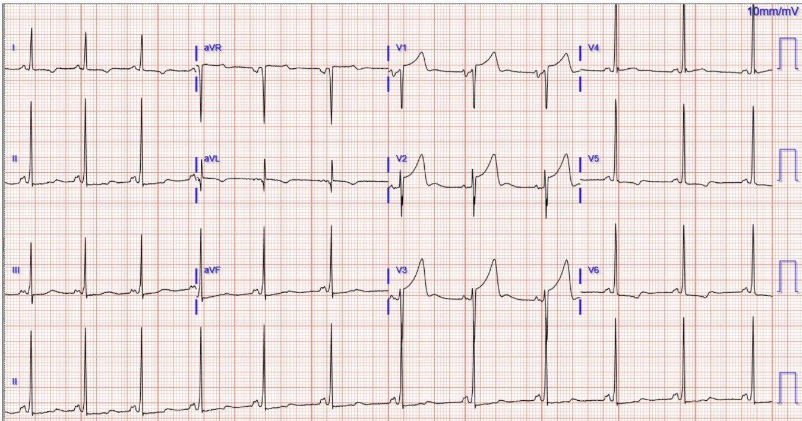
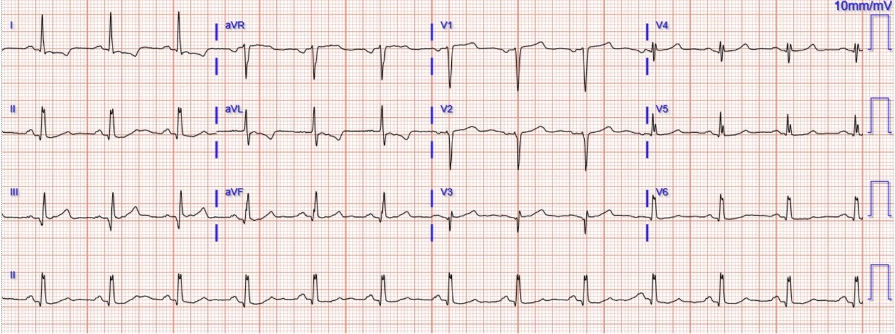
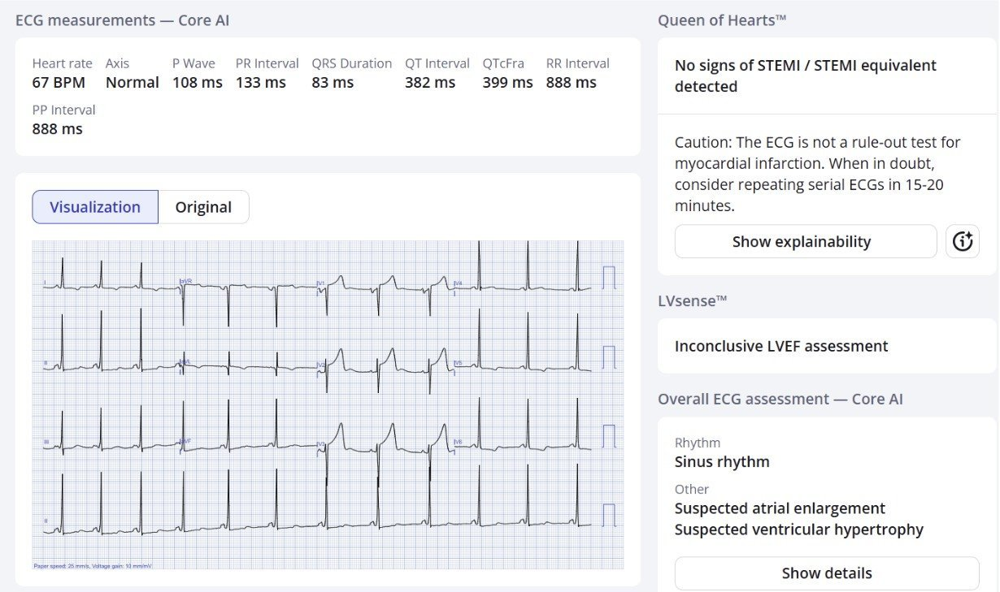
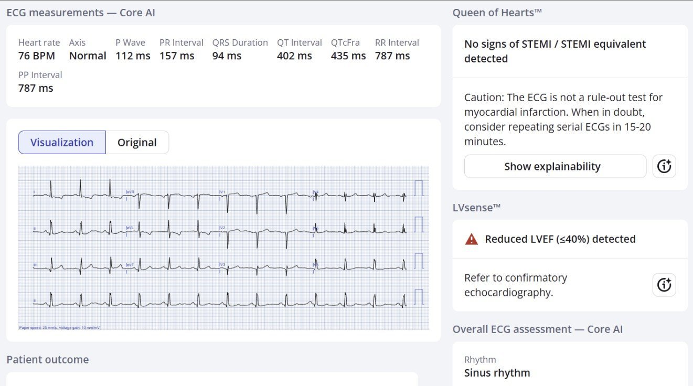
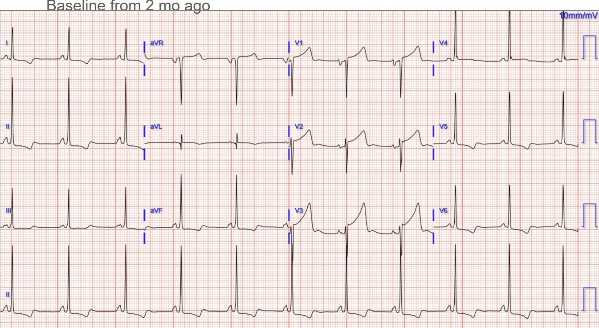
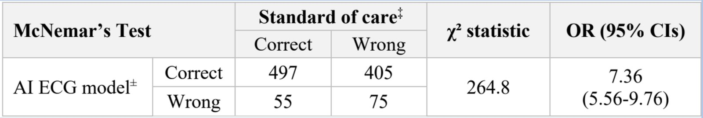
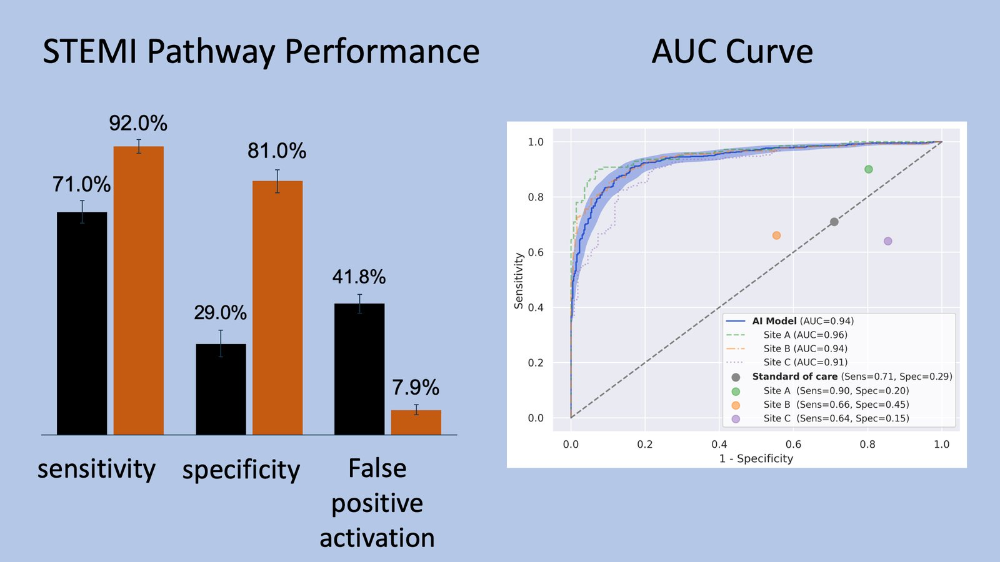
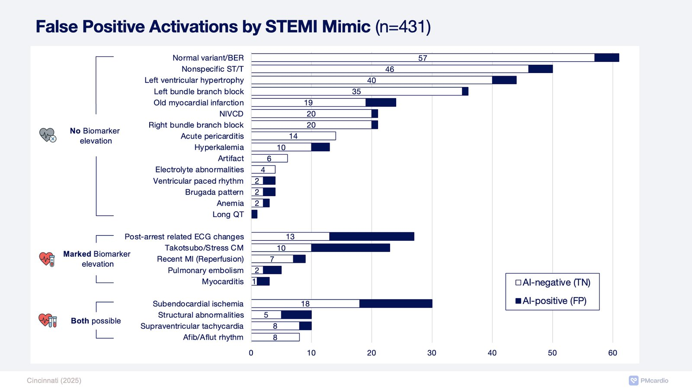
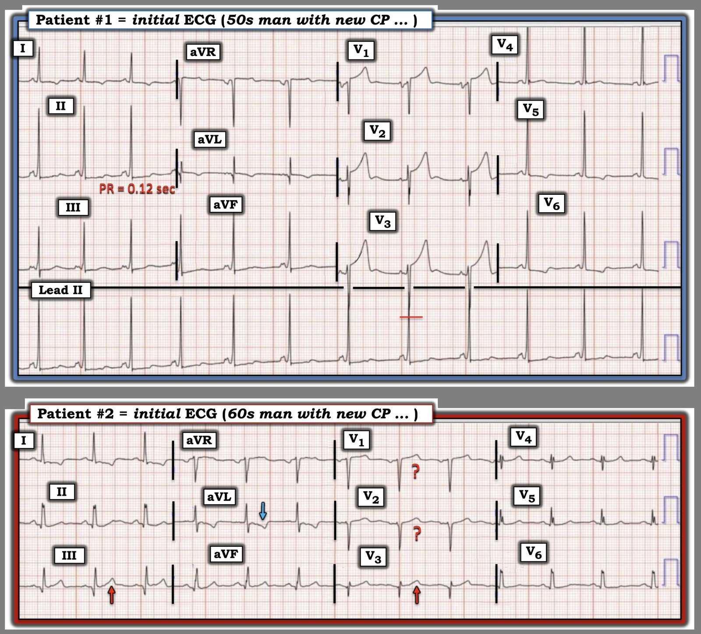

13/03/2026 — Bài đố: cả hai bệnh nhân đều đau ngực cấp lúc nửa đêm, bệnh nhân nào, cả hai hay không ai cần tái tưới máu cấp cứu?
Bản dịch tiếng Việt của bài "Quiz post: both patients with acute chest pain in the middle of the night, which or both or neither need emergent reperfusion?" – Dr. Smith’s ECG Blog. Giữ nguyên toàn bộ 9 hình ảnh của bản gốc.
Nghiên cứu đã công bố: Khi điện tâm đồ rất khó, Queen có khả năng đúng cao gấp 7,36 lần so với Chăm sóc Chuẩn (Standard of Care).
Bệnh nhân #1: Nam giới khoảng 50 tuổi, đau ngực cấp không do chấn thương, dấu hiệu sinh tồn bình thường, và đây là điện tâm đồ lúc phân loại (triage):


Bạn nghĩ sao?
Bệnh nhân #2: Nam giới khoảng 60 tuổi, đau ngực cấp không do chấn thương, dấu hiệu sinh tồn bình thường, và đây là điện tâm đồ lúc phân loại:


Bạn nghĩ sao?
Bệnh nhân nào, cả hai, hay không ai có dấu hiệu điện tâm đồ của tắc động mạch vành cấp và cần tái tưới máu cấp cứu?
Đây là nhận định của Queen of Hearts:
Bệnh nhân 1:


Bệnh nhân 2:


Ứng dụng PMcardio for Individuals 3.0 mới nay đã có mô hình Queen of Hearts mới nhất và khả năng giải thích của AI (bản đồ nhiệt màu xanh)! Tải ngay cho iOS hoặc Android. https://www.powerfulmedical.com/pmcardio-individuals/ (Bác sĩ Smith và Meyers đã huấn luyện mô hình AI và là cổ đông của Powerful Medical). Là thành viên cộng đồng của chúng tôi, bạn có thể dùng mã DRSMITH20 để được giảm 20% độc quyền cho năm đầu tiên của gói đăng ký hằng năm. Tuyên bố miễn trừ trách nhiệm: Một số Mô-đun AI ECG là thiết bị y tế mang dấu CE theo EU MDR và chỉ được chứng nhận để lưu hành tại Liên minh châu Âu và Vương quốc Anh. Công nghệ PMcardio chưa được Cục Quản lý Thực phẩm và Dược phẩm Hoa Kỳ (FDA) cấp phép sử dụng lâm sàng tại Hoa Kỳ.
Smith: Tôi xem cả hai điện tâm đồ mà không có bất kỳ thông tin nào và ngay lập tức có thể nói rằng cả hai đều là hình ảnh giả (mimic) (“Không phải OMI”, hay “Không có dấu hiệu STEMI/tương đương STEMI”).
Pendell tiếp tục:
Cả hai bệnh nhân đều bị bác sĩ điều trị nghi ngờ là “STEMI”. Phòng thông tim (cath lab) đã được kích hoạt trong đêm cho cả hai người, và cả hai đều có kết quả chụp động mạch vành bình thường cùng troponin âm tính liên tiếp.
Không phát hiện nguyên nhân nguy hiểm nào khác gây ra triệu chứng và cả hai đều được xuất viện trong tình trạng tốt.
Cả hai điện tâm đồ đều là hình ảnh giả ST chênh lên do thiếu máu cục bộ. Xem phân tích chi tiết của Ken Grauer bên dưới. Ca 1 là LVH giả xoáy trước tim (precordial swirl). Ca 2 là một dạng biến thể nền mà tôi không có tên gọi cụ thể, nhưng đã gặp nhiều lần. Ca 2 cũng có thể có đặc điểm LVH gây ST chênh xuống dốc xuống/sóng T đảo ngược (STD/TWI) ở các chuyển đạo bên cao.
Bệnh nhân 1 có sẵn điện tâm đồ nền, nhưng chỉ được tìm thấy sau khi thông tim:


Bệnh nhân 2 không có điện tâm đồ nền.
Kích hoạt phòng thông tim dương tính giả do điện tâm đồ khó là một vấn đề thường gặp và quan trọng, dù không quan trọng bằng vô số OMI bị bỏ sót ở mặt bên kia của đồng xu. Cả hai đều có thể được cải thiện đáng kể nhờ phát triển (hoặc sử dụng) chuyên môn đọc điện tâm đồ.
Chúng tôi tại Dr. Smiths ECG Blog đã nỗ lực hết sức từ khoảng năm 2008 để giúp mọi người học điều này miễn phí! Và chúng tôi sẽ luôn miễn phí ở đây trên blog. Với những ai cũng muốn tận dụng AI cho mục đích này, chúng tôi đang cố gắng hết sức để Queen chính xác nhất có thể.
Smith: Thỉnh thoảng, tôi nhận được những điện tâm đồ mà Queen cho kết quả dương tính giả, hoặc âm tính giả. Mọi người nên hiểu rằng Queen không hoàn hảo. Chúng tôi liên tục cải thiện cô ấy, nhưng cô ấy không hoàn hảo. Tuy nhiên, con người còn kém hoàn hảo hơn nhiều. Có những người chỉ trích xe tự lái vì thỉnh thoảng xảy ra tai nạn giao thông do AI lái; nhưng con người còn tệ hơn nhiều.
—–Chúng tôi đã công bố một nghiên cứu gần đây so sánh Queen với các lần kích hoạt phòng thông tim theo Chăm sóc Chuẩn (và hãy nhớ rằng “chăm sóc chuẩn” là các bác sĩ có trong tay điện tâm đồ, triệu chứng, hồ sơ, điện tâm đồ cũ, siêu âm tim tại giường, v.v.). Queen không có bối cảnh nào hỗ trợ; tất cả những gì cô ấy có chỉ là chính điện tâm đồ. Bác sĩ hoặc nhân viên cấp cứu phải dùng bối cảnh để diễn giải kết quả của cô ấy. Queen giảm dương tính giả từ 42% xuống 8% đồng thời tăng độ nhạy trên điện tâm đồ đầu tiên từ 71% lên 92%. Queen cũng có một số trường hợp âm tính giả và dương tính giả. Nhưng bảng dưới đây cho chúng ta thấy đôi khi điện tâm đồ rất khó (75 điện tâm đồ mà cả Queen lẫn Chăm sóc Chuẩn đều sai), và đôi khi lại dễ (497 ca mà cả hai đều đúng). Nhưng trong các ca khó, khi hoặc Queen hoặc Chăm sóc Chuẩn sai, Queen đúng ở 405 ca, trong khi Chăm sóc Chuẩn đúng ở 55 ca.
Khi điện tâm đồ rất khó (điện tâm đồ và chăm sóc chuẩn bất đồng), Queen có khả năng đúng cao gấp 7,36 lần so với “Chăm sóc Chuẩn”.






= = =
======================================
BÌNH LUẬN CỦA TÔI, bởi KEN GRAUER, MD (13/3/2026):
Câu hỏi quan trọng được đặt ra trong bài thử thách hôm nay của Dr. Meyers là — Liệu 2 bệnh nhân đau ngực (CP) cấp trong ca hôm nay có cần tái tưới máu cấp cứu dựa trên điện tâm đồ ban đầu của họ hay không?
- Tôi thấy những ca như thế này đặc biệt bổ ích — vì chúng ta có kết quả thông tim cho chúng ta biết Câu trả lời.
- Dù vậy — tôi sẽ đưa ra một cách tiếp cận hơi khác cho thử thách này.
= = =
Cách tiếp cận của tôi:
Điểm điều chỉnh mà tôi thêm vào cách tiếp cận của mình, là thay vì giới hạn ở 2 Câu trả lời (tức là, Thông tim cấp cứu kèm PCI là cần ngay hay không cần ngay) — tôi thiên về việc cân nhắc một Câu trả lời khả dĩ thứ 3 — mà trong bài hôm nay là tôi chưa sẵn sàng đưa ra câu trả lời dứt khoát cho Bệnh nhân #2 chỉ dựa vào điện tâm đồ lúc phân loại của anh ấy.
- Hiển nhiên — Chúng ta không thể trì hoãn nhiều. “Thời gian là Cơ tim (myocardium)”. Như Bác sĩ Smith và Meyers đã nhấn mạnh trong bài ngày 8 tháng Hai năm 2026 — bài ngày 23 tháng Mười năm 2025 — bài ngày 15 tháng Một năm 2026, và nhiều bài khác — lợi ích lớn nhất từ tái tưới máu đạt được trong vòng 4 giờ đầu sau tắc động mạch vành cấp (Mỗi 2 giờ chậm trễ dẫn đến thêm 60% cơ tim bị nhồi máu).
- Nói như trên — trong hầu hết các trường hợp, có thể quyết định về nhu cầu thông tim kịp thời trong thời gian tối thiểu trong khi chờ thêm một số thông tin, bao gồm: i) Một hoặc nhiều điện tâm đồ ghi lại (với bản ghi lại thứ 1 thực hiện trong vòng 10-15 phút tới); — ii) Thêm một chút bệnh sử (kèm theo dõi liên tục tình trạng bệnh nhân); — iii) Ít nhất là kết quả Troponin đầu tiên (hiểu rằng Troponin lần 1 bình thường không loại trừ hoàn toàn một biến cố cấp); — và, iv) Đánh giá bằng siêu âm tim tại giường ghi trong lúc đau ngực, tìm rối loạn vận động thành khu trú (nếu phát hiện sẽ ủng hộ nhu cầu thông tim ngay lập tức).
= = =
Về điện tâm đồ Ban đầu của Bệnh nhân #1:
Tôi sẽ không kích hoạt phòng thông tim dựa trên điện tâm đồ ban đầu của Bệnh nhân #1 — vì tôi cho rằng bản ghi này gợi ý nhiều nhất đến LVH kèm “tăng gánh”. Như thể hiện trong Hình 1:
- Biên độ QRS tăng rõ rệt ở nhiều chuyển đạo — thỏa mãn nhiều Tiêu chuẩn Điện thế thường được trích dẫn nhất cho LVH (tức là, Sóng R ở các chuyển đạo dưới >>20 mm — sóng S sâu ở chuyển đạo V3 [chồng lên sóng R cao ở dải nhịp dài chuyển đạo II] — sóng R rất cao ở chuyển đạo V4 bị cắt cụt do giới hạn của giấy điện tâm đồ — sóng R ≥25 mm ở chuyển đạo V5 — sóng R >18 mm ở chuyển đạo V6).
- Hình dạng ST-T điển hình cho “tăng gánh” thất trái ở nhiều chuyển đạo bên trái (= các chuyển đạo I,V5,V6 — mỗi chuyển đạo đều có ST chênh xuống dốc xuống từ từ rồi kết thúc bằng sự trở về đường nền nhanh hơn ở phần cuối sóng T).
Các đặc điểm khác cần lưu ý về điện tâm đồ ban đầu của Bệnh nhân #1:
- Mặc dù có ST chênh lên ở điểm J đáng kể ở các chuyển đạo V1,V2,V3 — như đã bàn trong Bình luận của tôi ở bài ngày 20 tháng Sáu năm 2020 — “tăng gánh” thất trái ở một số bệnh nhân LVH có thể thấy ở các chuyển đạo phía trước, biểu hiện hình ảnh soi gương ngược lại với hình ảnh “tăng gánh” thất trái mà chúng ta quen thấy ở các chuyển đạo bên trái (tức là, đoạn ST dốc lên dạng lõm kèm điểm J chênh lên ở các chuyển đạo V1,V2 và/hoặc V3).
- LƯU Ý: Khoảng PR trông “ngắn” (tôi đo được ở giới hạn dưới bình thường của dẫn truyền xoang ở người lớn = 0,12 giây). Ngoài ra — một số chuyển đạo dường như có biến dạng nhẹ ở sườn lên ban đầu của sóng R. Xin nhấn mạnh: Tôi sẽ không chẩn đoán WPW ở bệnh nhân này — vì chúng ta không thấy dấu hiệu rõ ràng của sóng delta. Nhưng khoảng PR trên bản ghi này ngắn bất thường đối với một người 50 tuổi — và dẫn truyền qua AP (Đường phụ) có thể vừa từng lúc vừa không hoàn toàn — nên sẽ là thận trọng khi khai thác thêm bệnh sử và xem lại các bản ghi khác của bệnh nhân này để chắc chắn rằng chúng ta không đang thấy tiền kích thích một phần.
- Điều cốt lõi: Tôi đã nghi ngờ mạnh một LVH “giả” (fake) ngay khi thấy bản ghi này. Do đó — tôi sẽ không kích hoạt phòng thông tim dựa trên điện tâm đồ ban đầu này của Bệnh nhân #1. Dù vậy — mức độ tương đối của ST chênh lên ở điểm J ở các chuyển đạo V1,V2 ở bệnh nhân đến khoa cấp cứu (ED) vì đau ngực cấp này nhiều hơn mức tôi thường kỳ vọng đối với “tăng gánh” thất trái ở chuyển đạo trước. Vì vậy tôi sẽ ghi lại điện tâm đồ và xét nghiệm Troponin liên tiếp để xác nhận nhận định của tôi rằng đây là một LVH “giả”.
= = =
Hình 1: So sánh giữa 2 điện tâm đồ ban đầu trong ca hôm nay.


= = =
Điện tâm đồ Ban đầu của Bệnh nhân #2:
Tôi diễn giải điện tâm đồ ban đầu của Bệnh nhân #2 là không có giá trị chẩn đoán. Do đó — tôi sẽ không kích hoạt phòng thông tim dựa trên bản ghi ban đầu này. Dù vậy — tôi cho rằng có một số đặc điểm không điển hình mà ở người đàn ông khoảng 60 tuổi đến khoa cấp cứu vì đau ngực cấp này, cần được xác nhận rằng không có biến cố cấp nào đang diễn ra.
- Nhịp xoang khoảng ~75/phút. Các khoảng và trục bình thường — và không có lớn buồng tim.
- Sóng q ở các chuyển đạo dưới nhỏ và hẹp, và có lẽ không có ý nghĩa. Các sóng q vách bình thường rất nhỏ thấy ở các chuyển đạo bên I,V5,V6.
- Tăng tiến sóng R — đáng chú ý với sóng r ban đầu rất nhỏ ở các chuyển đạo V1,V2, và gợi ý có sóng Q ban đầu ở chuyển đạo V3.
- Hình dạng sóng T đã “lọt vào mắt” tôi ở một số chuyển đạo: i) Sóng T ở chuyển đạo V3 (nơi dường như có sóng Q ban đầu) — trông không tương xứng với sóng r rất nhỏ ở chuyển đạo này, đặc biệt khi có ST chênh lên nhẹ ở chuyển đạo V3; — ii) Sóng ST-T ở các chuyển đạo V1,V2 trông phù hợp với “tăng gánh” thất trái ở chuyển đạo trước — ngoại trừ việc không chuyển đạo nào trên bản ghi này gần đạt tiêu chuẩn điện thế LVH; — và, iii) Sóng T dương ở chuyển đạo III — và sóng T âm ở chuyển đạo aVL đều trông nhọn hơn mức tôi thường kỳ vọng, đặc biệt khi biên độ QRS ở các chuyển đạo này chỉ ở mức vừa phải.
- Xin nhấn mạnh: Tôi không nghĩ bất kỳ thay đổi nào trong số này có giá trị chẩn đoán một biến cố cấp — và tôi sẽ không kích hoạt phòng thông tim dựa trên điện tâm đồ ban đầu này. Nhưng vì người đàn ông khoảng 60 tuổi này đến khoa cấp cứu vì đau ngực cấp — tôi sẽ muốn ghi lại điện tâm đồ — kiểm tra Troponin liên tiếp — và làm siêu âm tim tại giường để xác nhận nhận định của tôi rằng Bệnh nhân #2 không đang có biến cố cấp.
= = =
= = =